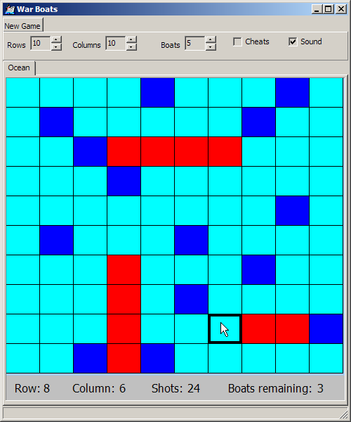

Reminder: The next programming assignment (#2) will build on this assignment. This
means that you must complete this assignment in order to do the second assignment. Even if
your implementation is not perfect (many won't be), you still need to submit it and then
fix it for use with the second assignment.
This should go without saying, but I'm going to say it anyway: CS170 is significantly more
difficult than CS120. If you were able to wait until the last minute to do a CS120 assignment,
then good for you! However, if you wait until the last minute for this assignment, you will likely
get a 0 on it. The amount of time you spend on this assignment is probably going to be
proportional to your grade in CS120. If you got an A in CS120, you will probably be able to finish
this assignment with few problems.
If you got a C-, then you are likely to spend a lot more time. Please keep
this in mind as you budget your time.
Things that will help you: Read all instructions,
read the handout, read the FAQ, read the sample code, use a makefile, attend
the lectures and ask questions.
The resources are there to help you.
Failure to use them will result in very poor results.
Information
/******************************************************************************/
/*!
\file foobar.cpp
\author Master Shake
\par email: master.shake\@digipen.edu
\par DigiPen login: shakemaster
\par Course: CS170
\par Section: E
\par Assignment #9
\date 2/19/2029
\brief
This file contains the implementation of the following functions for the
FooBar assignment.
Functions include:
+ Foo
+ Bar
+ Baz
+ blah, blah, blah,
+ yada, yada, yada,
other stuff here....
Hours spent on this assignment:
Specific portions that gave you the most trouble:
*/
/******************************************************************************/
GNU:g++ -Wall -Wextra -Werror -Wconversion -O -ansi -pedantic -g -o warboats driver-sample.cpp Ocean.cpp PRNG.cpp
Windows
Linux/Mac/Cygwin/makefilesrm -rf html/ ( type Doxyfile & echo EXTRACT_ALL=YES ) | doxygen.exe - ( type Doxyfile & echo EXTRACT_ALL=NO ) | doxygen.exe -
rm -rf html/ ( cat Doxyfile ; echo "EXTRACT_ALL=YES" ) | doxygen - ( cat Doxyfile ; echo "EXTRACT_ALL=NO" ) | doxygen -
Additional Sample Program Runs
Be sure that you test your code with this driver as well, especially the 8x12 board. YOU HAVE BEEN WARNED.
Windows GUI Driver
After completing this assignment, you will have the "logic" to create a simple game like this one.
No installation necessary. Just copy to your hard drive and run it.
Download the executable
(with alternate sounds)

This Windows executable will also run under Linux and Mac using wine.